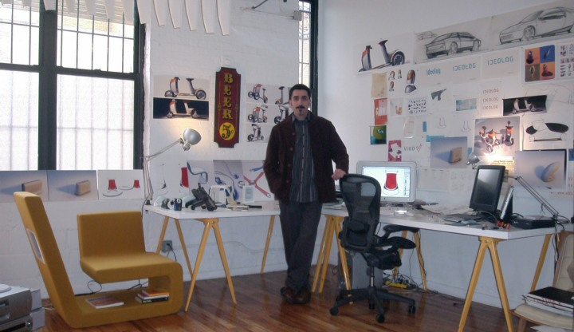
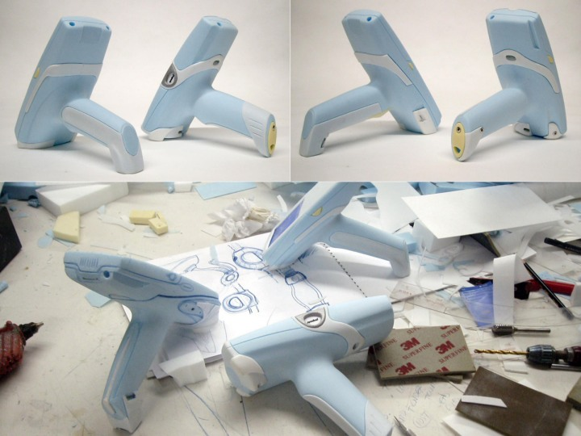

Not: Ýlk defa TurkCADCAM.net
Dergisi Ocak-Þubat 2006 Sayýsýnda yer almýþ bu yazý,
ek fotoðraflarla birlikte Aðustos 2008'de TurkCADCAM.net portalýndan yayýnlanmaya baþlamýþtýr.
Bize kýsaca kendinizden bahseder misiniz?; Çocukluk ve/veya gençlik yýllarýnýzda da tasarýmla ilgileniyor muydunuz? Lisans ve lisansüstü eðitimleri hangi okullarda, ne zaman aldýnýz? Aldýðýnýz ödüller nelerdir?
Mirzat Koç: 1965 doðumluyum. Ellerimi kullanmaya her zaman çok önem vermiþimdir. Mekanizmalar ve karmaþýk þeyler her zaman ilgimi çekmiþtir. Çocukluk yýllarýnda yapmýþ olduðum paten ve çok tekerlekli kaykaylar, boya kutularýnýn üzerinde gerilmiþ deriden bateriler ve yaz tatillerinde öðrenmiþ olduðum el zanaatlardan biri olan zenne kunduracýlýðýný örnek verebilirim. Her birinde ortaya çýkarmýþ olduðum bir ürün vardý. Ürün tasarýmcýsýnýn kendini ifade etmesinin en güzel yolu budur bence.
Ýlk ve orta öðretim döneminde resim ve logolar yapmak ileriki yýllarda duvarlara slogan yazmakla devam etti. O konuda da belli bir özen ve tarz oluþturduðumdan olsa gerek, teþhis edilmem çok kolay oluyordu.
Akademik kariyerim özetle ise þöyle geliþmiþtir;
1982 Sultanahmet Teknik Lisesi Makine Teknisyenliði Bölümü'nün ardýndan, 1991 ODTÜ Endüstri Ürünleri Tasarýmý Bölümü'nden mezun oldum. 1990 yýlýnda Paris Les Ateliers Tasarým Okulu'nda bir yaz çalýþtayýna katýldým. 1995 sonunda Pratt Institute New York'ta Endüstri Ürünleri Tasarýmý Yüksek lisansýmý tamamladým.
15 yýla yakýn tasarým kariyerim süresince Amerika, Avrupa ve Japonya'da birçok ürün tasarýmý ödülü aldým. Baþlýcalarý;
1995 Motorola çocuklar için çaðrý cihazý tasarým yarýþmasý, 1997 RedDot, 1998, 2000 ve 2002'de IDEA ABD Ürün tasarýmý ödülleri ve 2003'te Surface Dergisi tarafýndan en iyi 10 Tasarýmcýdan biri seçildim ve ürünlerim Milano ve NewYork'ta sergilendi. Tabii ki en deðerlileri evlerde ve iþyerlerinde kullanýlan ve deðer verilen tasarýmlarýmýzdýr.

Ýdeolog NY Ofisi'nden bir köþe.
ABD/NY'a yerleþmeniz nasýl oldu? Hangi firmalara ne gibi projeler yaptýnýz?
Mirzat Koç: ABD'ne 1992'de Milli Eðitim Bakanlýðý'nýn açmýþ olduðu Ürün Tasarýmý Yüksek Lisans Bursu'nu -ki kazanmýþ olduðum en deðerli ödüldür benim için- kazandýktan sonra gidebildim.
Yüksek lisans eðitimim ile eþ zamanlý olarak, New York çevresinde bulunan birçok firmada serbest tasarýmcý olarak çalýþtým. Ürün tasarýmý kariyerimin en önemli kýsmýný oluþturan bu dönemde birbirinden çok farklý sektörlerde "öðrenerek" çalýþtým.
Spor malzemelerinden, medikal ürünlere, motosikletlerden patenlere kadar, ilginç gelebilir, Kýzýlderili yerlileri balýk tutma zokalarýna kadar varan ürünlerin tasarýmýnda bulundum. Elbette, bütün bunlar paha biçilmez deneyimler bir tasarýmcý için. Belli baþlý iþ yaptýðým ürün ve firmalardan örnek vermek gerekirse;
Kodak için dijital fotoðraf makineleri, Symbol Technologies için barkod okuma sistemleri, Graco için çocuk puseti, Laerdal için medikal ürünler, Fujitsu ve Panasonic için kiþisel bilgisayarlar, fotoðraf makineleri ve fotokopi cihazlarý, Waterpik için duþ baþlýklarý örnek verilebilir. Elbette, her birini sýralamak imkansýz; Sadece Kodak firmasý için 17'nin
üzerinde farklý ürün tasarýmýnda bulundum ve katkýlarýmýz devam etmekte.

Barkod okuma cihazlarý tasarým sürecinden tipik bir görüntü. 3 boyutlu köpük modeller tasarým süreci açýsýndan sürekli ergonomi testi yapmaya çok yatkýndýr.
Avuç içi bilgisayar ve telefon cihazlarýna barkod teknolojisi uyarlamasýndan örnekler.
Graco için tasarlanmýþ puset
ABD'nde uygulanan yeni ürün geliþtirme prosesi nasýl iþliyor? Diðer proje ekibindeki farklý disiplinlerden olan pazarlamacýlar, makine, imalat, elektronik ve bilgisayar mühendisleriyle iyi bir diyaloga girerek verimli bir þekilde çalýþmak için hangi yöntemleri kullanýyorsunuz?..
Mirzat Koç: Yeni ürün geliþtirme sürecini özetle açýklamak gerekirse;
Her þey müþterinin hazýrladýðý brifing ve istekle baþlýyor. Þirketler belirledikleri iþ planlarýna göre, hangi ürünlerde ve sektörlerde etkin olmak istediklerini ve vizyonlarýný bize iletiyorlar.
Bu vizyona anlam ve þekil vermek, sözcükleri nesneye dönüþtürmek bizlere düþüyor. Bazý projelerde, özellikle platform projelerde, birçoðunuzun bildiði "beyin fýrtýnasý - brain storming" çalýþmalarý yapýlýyor. Bu çalýþma þekli esasen her tasarým ofisinde en az iki kiþi olduðu sürece uygulanan bir metot. Benim anlatmak istediðim ise, daha sistemli ve profesyonel ekipler tarafýndan organize edilen bir çalýþma þekli.
Kýsaca söyle: Bolu'da güzel bir otel düþünün. Buraya Dünya'nýn farklý ülkelerinden insanlar çaðýrýn. Mühendisler, bilim adamlarý, giriþimciler, sporcular, müzisyenler, Dünya'nýn kendileri etrafýnda döndüðünü düþünenler, aklýna her geleni söyleyenler, çok bilgili olup-çok az konuþanlar ve daha nice farklý yaþ, bilgi ve kültür gruplarýndan 25-30 kiþilik bu grubu 3 gün boyunca günde 8 saat bir mekanda konuþturun. Organize edenlerin en önemli yeteneði, katýlýmcýlarý destekleyen ve fikirlerin açýða çýkmasýný tetikleyen tarzlarý.
Tüm bu süreç yaþanýrken de salonun iki ucuna, her sözü, vücut hareketini izleyip, çok hýzlý bir þekilde karikatür tarzý bir çizim tekniði ile görsele dönüþtüren iki tane de ressam/karikatürist yerleþtirin.
Bu üç günün sonunda ortaya binlerce fikir ve bir o kadar da resim çýkar. Her bir resim, bakýldýðýnda, bir fikri, temayý çok akýllýca ve akýlda kalýcý bir þekilde ifade eder. Bu üç günün sonunda bilgiler toplanýr, elemeler yapýlýr ve projenin yönü belirlenir. Bundan sonrasý ofisimizde devam eder. Bu resimlere ve sözcüklere anlam vermek ürün tasarýmcýsýna düþer. Eskiz çalýþmalarý, sunumlar, maketler, prototipler birbirini takip eder. Süreç boyunca sürekli diyalog halinde malzemeciler, mühendisler ve pazarlamacýlar ile çalýþýlýr.
Müþterimizde ve bizde olmayan destek ise dýþarýdan temin edilir; Örneðin hýzlý prototip yapýmý vs. gibi.
Bu sistemin her projede uygulanmadýðýný belirtmekte fayda var sanýrým. Bu tarz çalýþmanýn maliyeti oldukça yüksektir. Buna benzer çalýþmalarý daha küçük ve makul ölçekte yapabilmek de mümkündür. Biz projelere bu tarz çalýþmayý kendi ölçeðimizde her zaman uygulamakta -bütçe elverdiði müddetçe- gayret gösteriyoruz.
Beyin fýrtýnasý sürecinde ortaya çýkan fikir, sözcük ve imalarýn görsel tercümesi.
Beyin fýrtýnasý ardýndan fikir geliþtirme sürecinde ortaya çýkan soyut 3D form ve fonksiyon modelleri
2 boyutlu arayüz ve fonksiyonel analiz çalýþmalarý.
Water Pik Inc. (www.waterpik.com) için tasarlanmýþ,
sýcak-soðuk ayarlarý baþlýk üzerinde düzenlenmiþ düþ baþlýðý
US Patent No: 6,739,523 - Multi Functional Shower Head, May 25, 2004
Bu patenti PDF formatýnda indirmek için týklayýnýz (1,1MB)
|